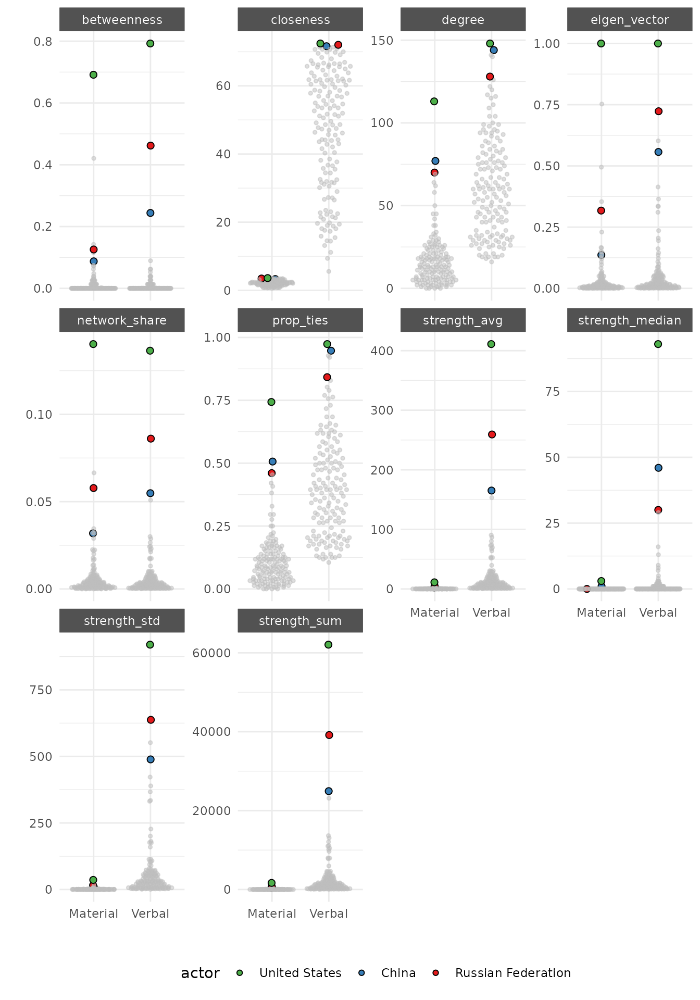
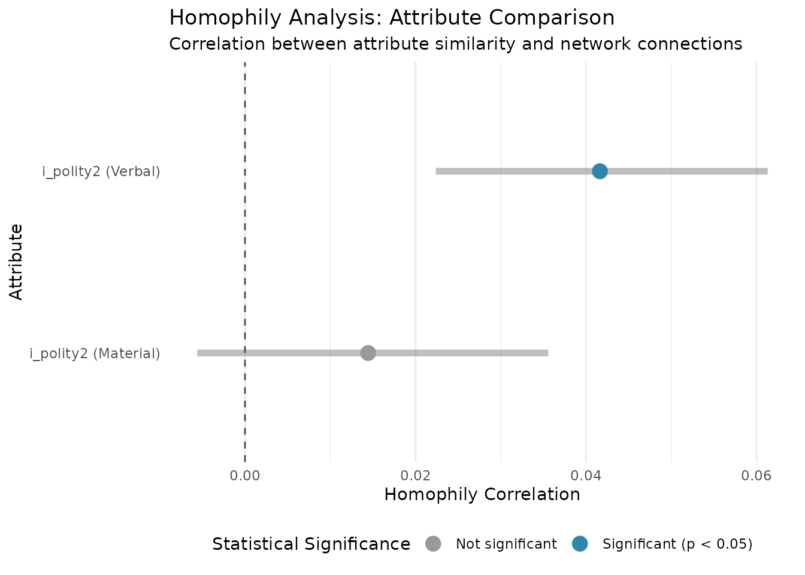

Multilayer Networks
Cassy Dorff and Shahryar Minhas
2025-06-30
Source:vignettes/attribute_analysis.Rmd
attribute_analysis.RmdThis vignette provides a guide to working with multilayer networks in
netify Multilayer networks are a framework for analyzing
systems where multiple types of relationships exist between the same set
of actors. Some literature distinguishes between multiplex
(same node set, no interlayer edges) and multilayer networks
(which may include interlayer links), but we use the term “multilayer”
broadly here.
What Are Multilayer Networks?
In many real-world systems, entities interact through multiple types of relationships simultaneously:
International Relations: Countries simultaneously engage in trade relationships and military conflicts — understanding why states fight often requires examining their economic interdependence, while trade patterns may be shaped by security concerns and alliance structures.
Intrastate Conflict: Armed groups within civil wars are connected through both violent encounters and tactical cooperation — rebel groups may fight each other over territory while simultaneously coordinating against government forces, creating overlapping networks of conflict and collaboration.
U.S. Politics: Members of Congress are linked through bill cosponsorship networks and campaign contribution patterns — legislators who work together on policy may draw from entirely different donor bases, while those who share funders might champion opposing legislation.
Political Communication: Political elites interact through media citations and social media engagement — politicians may attack each other in press statements while amplifying each other’s social media content, creating distinct layers of public conflict and digital coordination.
Comparative Politics: Political parties connect through governing coalitions and electoral competition — parties that fiercely compete for votes in one district may partner in coalition governments at the national level, requiring analysis of both competitive and cooperative relationships.
Bit more formally …
A multilayer network is a collection of graphs, each representing a different relationship type among the same set of nodes. Formally, it consists of:
- A fixed node set
- A set of layers , each with its own adjacency matrix
- Optional interlayer couplings
— not currently implemented in
netify
Mathematically, a multilayer network with L layers and
N nodes can be represented as a 3D array of dimensions N ×
N × L, where each N × N slice represents the adjacency
matrix for one layer. In netify, multilayer networks can
also be dynamic, meaning each relational layer varies
across
discrete time points. These are represented as tensors of shape
,
enabling both cross-layer and temporal comparisons.
Why Use Multilayer Networks?
Analyzing relationships separately loses important information about how different types of interactions relate to each other. Multilayer networks allow us to:
- Discover cross-layer patterns: How do different types of relationships correlate?
- Identify layer-specific behaviors: Which actors are central in which layers?
- Analyze multiplexity: How many different ways do actors interact?
- Study layer interdependence: Does activity in one layer predict activity in another?
Let’s load the necessary libraries.
Working with Multilayer Networks
Multilayer networks allow us to analyze multiple types of relationships simultaneously. For example, we might want to study how different types of international cooperation (verbal vs material) relate to country attributes.
Creating a Multilayer Network
# Load ICEWS data for multilayer example
data(icews)
# Use ICEWS data for a single year to create cross-sectional multilayer
icews_2002 <- icews[icews$year == 2002, ]
# Create separate networks for different types of cooperation
# Include nodal and dyadic attributes directly from the icews dataframe
verbal_coop_net <- netify(
icews_2002,
actor1 = "i", actor2 = "j",
symmetric = TRUE,
weight = "verbCoop",
nodal_vars = c("i_polity2", "i_log_gdp", "i_log_pop", "i_region"),
dyad_vars = c("verbConf", "matlConf")
)
material_coop_net <- netify(
icews_2002,
actor1 = "i", actor2 = "j",
symmetric = TRUE,
weight = "matlCoop",
nodal_vars = c("i_polity2", "i_log_gdp", "i_log_pop", "i_region"),
dyad_vars = c("verbConf", "matlConf")
)
# Combine into a multilayer network
multilayer_net <- layer_netify(
netlet_list = list(verbal_coop_net, material_coop_net),
layer_labels = c("Verbal", "Material")
)
print(multilayer_net)Exploring Multilayer Networks
Visualizing the Multilayer Network
The plot() function now supports multilayer networks
directly with automatic faceting by layer:
# Plot multilayer network - automatically facets by layer
# Edge weights are automatically mapped to edge transparency (alpha)
# with a unified legend showing the weight scale
plot(multilayer_net,
add_text = FALSE,
node_size_by = "i_log_gdp"
)Interpretation: The visualization immediately reveals a striking difference between verbal and material cooperation networks. The verbal cooperation network (right panel) shows a dense, interconnected structure with most countries engaging in diplomatic exchanges. In contrast, the material cooperation network (left panel) is much sparser, indicating that actual material support between countries is far less common than verbal commitments. The node sizes, representing GDP, show that larger economies appear in both networks but don’t necessarily dominate the material cooperation layer.
The plot automatically:
- Creates separate facets for each layer
- Maps edge weights to transparency (alpha) with a unified scale across all layers
- Displays an edge weight legend for interpreting the visualizations
Customizing Edge Weight Display
You can customize how edge weights are displayed:
- Custom legend labels:
# Plot with custom edge weight label
plot(multilayer_net,
add_text = FALSE,
node_size_by = "i_log_gdp",
edge_alpha_label = "Cooperation Intensity"
)- Rescale edge weights when layers have very different scales:
# Rescale edge weights to 0-1 range across all layers
plot(multilayer_net,
add_text = FALSE,
node_size_by = "i_log_gdp",
rescale_edge_weights = TRUE
)Note how the legend now shows “Edge Weight (Rescaled)” and the scale ranges from 0 to 1, making it easier to compare patterns across layers with different original weight scales. It does not make much difference here but if we were visualizing say trade and material conflict events then this would make much more of a difference.
You can control the layout with the facet_ncol
parameter:
# Vertical layout with one column
plot(multilayer_net,
add_text = FALSE,
node_size_by = "i_log_gdp",
edge_alpha = 0.5,
facet_ncol = 1
)Basic Summary Statistics
The summary() function provides layer-specific
statistics:
# Get summary statistics for the multilayer network
summary(multilayer_net)
#> layer num_actors density num_edges prop_edges_missing mean_edge_weight
#> 1 Verbal 152 0.4059037 9378 0 19.8132625
#> 2 Material 152 0.1114958 2576 0 0.5209132
#> sd_edge_weight median_edge_weight min_edge_weight max_edge_weight competition
#> 1 145.328313 0 0 5760 0.03999949
#> 2 5.503786 0 0 380 0.03794829
#> sd_of_actor_means transitivity
#> 1 44.80411 0.6058952
#> 2 1.14123 0.3106440Interpretation: The summary statistics confirm our visual observation and provide quantitative evidence for the “cheap talk” phenomenon in international relations:
- Density: Verbal cooperation (0.406) is nearly 4 times denser than material cooperation (0.111), meaning 40.6% of all possible country pairs engage in verbal cooperation, but only 11.1% in material cooperation.
- Mean edge weight: The average verbal cooperation score (19.81) is dramatically higher than material cooperation (0.52), indicating not just more connections but also stronger ones in the verbal layer.
- Transitivity: Verbal cooperation shows higher clustering (0.606) compared to material cooperation (0.311), suggesting that verbal cooperation networks exhibit stronger “friend of a friend” patterns.
Notice how verbal cooperation (Layer 1) has much higher density (0.406) compared to material cooperation (0.111), confirming that “talk is cheap” in international relations.
Actor-Level Summary
The summary_actor() function calculates actor-specific
statistics across layers:
# Get actor-level summaries
actor_stats <- summary_actor(multilayer_net)
# Show first few actors
head(actor_stats)
#> actor layer degree prop_ties strength_sum strength_avg strength_std
#> 1 Afghanistan Verbal 96 0.6315789 10165 67.317881 227.23255
#> 2 Albania Verbal 52 0.3421053 1033 6.841060 22.25491
#> 3 Algeria Verbal 69 0.4539474 1210 8.013245 18.92229
#> 4 Angola Verbal 72 0.4736842 1310 8.675497 24.24419
#> 5 Argentina Verbal 54 0.3552632 1437 9.516556 45.33076
#> 6 Armenia Verbal 72 0.4736842 2674 17.708609 66.87875
#> strength_median network_share closeness betweenness eigen_vector
#> 1 2 0.022352745 69.81684 0.01324503 0.23575193
#> 2 0 0.002271558 42.08366 0.00000000 0.01090484
#> 3 0 0.002660779 44.24323 0.00000000 0.01272946
#> 4 0 0.002880678 50.61548 0.00000000 0.01640435
#> 5 0 0.003159950 62.85642 0.00000000 0.03074809
#> 6 0 0.005880102 64.48050 0.00000000 0.04444640Interpretation: The actor-level statistics reveal interesting patterns. Afghanistan, despite its challenges in 2002, shows high verbal cooperation activity (degree = 96, meaning it verbally cooperates with 96 countries) and the highest average strength among these first few countries. This could reflect international diplomatic efforts following the 2001 intervention. The betweenness centrality values show which countries serve as bridges in the cooperation networks.
Visualizing Network Statistics
The plot_graph_stats() function automatically handles
multilayer networks and creates appropriate visualizations:
# Get summary statistics for plotting
graph_stats <- summary(multilayer_net)
# Plot network statistics across layers
# For multilayer non-temporal data, this creates a grouped bar plot
plot_graph_stats(graph_stats)Interpretation: This comparison clearly shows the structural differences between layers: - Competition (network centralization) is similar across both layers - Material cooperation has dramatically lower density, fewer edges, and lower average edge weights - The standard deviation of edge weights is much higher for verbal cooperation, indicating more variation in the intensity of verbal commitments - Both networks have the same number of actors (152 countries), but transitivity is notably higher in the verbal network
Actor-Level Visualization
The plot_actor_stats() function also handles multilayer
networks automatically:
# Actor distributions
plot_actor_stats(
actor_stats,
across_actor = TRUE
)
Interpretation: These distributions reveal layer-specific patterns: - Degree distribution: Both layers show right-skewed distributions, but verbal cooperation has a much wider spread with some countries connected to nearly all others - Betweenness: A few countries serve as critical bridges, particularly in the verbal layer - Strength metrics: The extreme right skew in the verbal layer indicates a few country pairs have exceptionally intense verbal cooperation
# Plot with focus on select actors
plot_actor_stats(
actor_stats,
across_actor = FALSE,
specific_actors = c(
"United States", "China",
"Russian Federation"
)
)
Interpretation: The major powers show interesting patterns: - The US dominates in both layers across most metrics, particularly in betweenness centrality, confirming its role as a global broker - Russia shows high verbal cooperation but relatively lower material cooperation - China (in 2002) shows moderate engagement in both layers, though this would likely look different in more recent data - The strength metrics reveal that US-Russia verbal cooperation is exceptionally high, likely reflecting ongoing diplomatic engagement despite tensions
This visualization: - Shows top 20 actors for each statistic - Facets by both statistic type and layer - Allows easy comparison of actor importance across layers
Multilayer Homophily Analysis
# Test homophily across layers
multilayer_homophily <- homophily(
multilayer_net,
attribute = "i_polity2",
method = "correlation"
)
# Results show homophily for each layer
print(multilayer_homophily)
#> net layer attribute method threshold_value homophily_correlation
#> 1 1 Verbal i_polity2 correlation 0 0.04162793
#> 2 1 Material i_polity2 correlation 0 0.01444973
#> mean_similarity_connected mean_similarity_unconnected similarity_difference
#> 1 -6.964294 -7.444698 0.4804043
#> 2 -7.016653 -7.279288 0.2626347
#> p_value ci_lower ci_upper n_connected_pairs n_unconnected_pairs
#> 1 0.000 0.020914623 0.05997395 4453 6573
#> 2 0.115 -0.006019252 0.03382903 1201 9825
#> n_missing n_pairs
#> 1 3 11476
#> 2 3 11476Interpretation: The homophily analysis tests whether similar countries (in terms of democracy scores) are more likely to cooperate: - Verbal cooperation shows significant homophily (p < 0.001) with a correlation of 0.042, indicating democracies slightly prefer cooperating verbally with other democracies - Material cooperation shows no significant homophily (p = 0.13), suggesting that material support crosses regime type boundaries - The mean similarity scores show that connected countries are slightly more similar in polity scores than unconnected ones, but the effect is modest
Comparing Layers with Mixing Matrices
# Create mixing matrices for each layer
multilayer_mixing <- mixing_matrix(
multilayer_net,
attribute = "i_region"
)
# The output includes statistics for each layer
print(multilayer_mixing)
#> $mixing_matrices
#> $mixing_matrices$`1_Verbal`
#> East Asia & Pacific Europe & Central Asia
#> East Asia & Pacific 0.028150992 0.043292813
#> Europe & Central Asia 0.043292813 0.166773299
#> Latin America & Caribbean 0.013329068 0.026444871
#> Middle East & North Africa 0.018447430 0.044892301
#> North America 0.003625507 0.008530604
#> South Asia 0.008957134 0.016634677
#> Sub-Saharan Africa 0.021753039 0.045851994
#> Latin America & Caribbean Middle East & North Africa
#> East Asia & Pacific 0.013329068 0.018447430
#> Europe & Central Asia 0.026444871 0.044892301
#> Latin America & Caribbean 0.030496908 0.008530604
#> Middle East & North Africa 0.008530604 0.033909149
#> North America 0.003518874 0.003838772
#> South Asia 0.003412241 0.007464278
#> Sub-Saharan Africa 0.010023459 0.028470889
#> North America South Asia Sub-Saharan Africa
#> East Asia & Pacific 0.0036255065 0.008957134 0.021753039
#> Europe & Central Asia 0.0085306035 0.016634677 0.045851994
#> Latin America & Caribbean 0.0035188740 0.003412241 0.010023459
#> Middle East & North Africa 0.0038387716 0.007464278 0.028470889
#> North America 0.0002132651 0.001172958 0.005971422
#> South Asia 0.0011729580 0.002985711 0.007570911
#> Sub-Saharan Africa 0.0059714225 0.007570911 0.074002986
#>
#> $mixing_matrices$`1_Material`
#> East Asia & Pacific Europe & Central Asia
#> East Asia & Pacific 0.062888199 0.03687888
#> Europe & Central Asia 0.036878882 0.18788820
#> Latin America & Caribbean 0.008152174 0.01552795
#> Middle East & North Africa 0.015916149 0.03843168
#> North America 0.007763975 0.01785714
#> South Asia 0.014363354 0.02406832
#> Sub-Saharan Africa 0.020962733 0.04231366
#> Latin America & Caribbean Middle East & North Africa
#> East Asia & Pacific 0.008152174 0.015916149
#> Europe & Central Asia 0.015527950 0.038431677
#> Latin America & Caribbean 0.026397516 0.002717391
#> Middle East & North Africa 0.002717391 0.048913043
#> North America 0.008928571 0.008540373
#> South Asia 0.003493789 0.006987578
#> Sub-Saharan Africa 0.004270186 0.014751553
#> North America South Asia Sub-Saharan Africa
#> East Asia & Pacific 0.0077639752 0.014363354 0.020962733
#> Europe & Central Asia 0.0178571429 0.024068323 0.042313665
#> Latin America & Caribbean 0.0089285714 0.003493789 0.004270186
#> Middle East & North Africa 0.0085403727 0.006987578 0.014751553
#> North America 0.0007763975 0.003105590 0.010093168
#> South Asia 0.0031055901 0.006987578 0.003105590
#> Sub-Saharan Africa 0.0100931677 0.003105590 0.049689441
#>
#>
#> $summary_stats
#> net layer attribute assortativity diagonal_proportion entropy modularity
#> 1 1 Verbal i_region 0.1558717 0.3365323 3.350767 0.122512
#> 2 1 Material i_region 0.2184878 0.3835404 3.346822 0.172344
#> n_groups total_ties
#> 1 7 9378
#> 2 7 2576Interpretation: The mixing matrices reveal regional cooperation patterns: - Assortativity: Material cooperation (0.218) shows stronger regional clustering than verbal cooperation (0.156), suggesting material support tends to stay within regions - Diagonal proportion: 38.4% of material cooperation occurs within regions compared to 33.7% for verbal cooperation - Europe & Central Asia shows the highest within-region cooperation in both layers - The entropy values are similar, indicating comparable diversity in mixing patterns
Cross-Layer Dyadic Analysis
# Analyze how dyadic factors correlate with different layers
# The networks already include dyadic attributes (verbConf and matlConf)
cross_layer_corr <- dyad_correlation(
multilayer_net,
dyad_vars = c("verbConf", "matlConf"),
edge_vars = c("Verbal", "Material") # Compare across layers
)
print(cross_layer_corr)
#> net layer dyad_var edge_var correlation p_value ci_lower ci_upper
#> 1 1 Verbal verbConf Verbal 0.4557314 0 0.4454203 0.4659217
#> 2 1 Verbal matlConf Verbal 0.2783377 0 0.2663596 0.2902298
#> 3 1 Verbal verbConf Material 0.2692519 0 0.2572107 0.2812096
#> 4 1 Verbal matlConf Material 0.2791647 0 0.2671924 0.2910507
#> 5 1 Material verbConf Verbal 0.4557314 0 0.4454203 0.4659217
#> 6 1 Material matlConf Verbal 0.2783377 0 0.2663596 0.2902298
#> 7 1 Material verbConf Material 0.2692519 0 0.2572107 0.2812096
#> 8 1 Material matlConf Material 0.2791647 0 0.2671924 0.2910507
#> n_pairs mean_dyad_var sd_dyad_var mean_edge_var sd_edge_var method
#> 1 22952 1.458958 30.91313 19.8132625 145.328313 pearson
#> 2 22952 1.382712 43.95998 19.8132625 145.328313 pearson
#> 3 22952 1.458958 30.91313 0.5209132 5.503786 pearson
#> 4 22952 1.382712 43.95998 0.5209132 5.503786 pearson
#> 5 22952 1.458958 30.91313 19.8132625 145.328313 pearson
#> 6 22952 1.382712 43.95998 19.8132625 145.328313 pearson
#> 7 22952 1.458958 30.91313 0.5209132 5.503786 pearson
#> 8 22952 1.382712 43.95998 0.5209132 5.503786 pearsonInterpretation: The dyadic correlations reveal how conflict relates to cooperation: - Verbal conflict strongly predicts verbal cooperation (r = 0.456), suggesting countries that talk also argue - Material conflict shows weaker but significant correlations with both cooperation types (r ≈ 0.27-0.28) - The cross-layer correlations (verbal conflict predicting material cooperation and vice versa) are moderate, indicating that different types of interactions are somewhat related but distinct
Visualizing Homophily in Multilayer Networks
When working with multilayer networks, creating distribution plots requires special consideration. Since each layer may have different network structures, we need to plot them separately.
# For distribution plots, we need to work with individual layers
# First, let's see the structure of our homophily results
str(multilayer_homophily)
#> 'data.frame': 2 obs. of 16 variables:
#> $ net : chr "1" "1"
#> $ layer : chr "Verbal" "Material"
#> $ attribute : chr "i_polity2" "i_polity2"
#> $ method : chr "correlation" "correlation"
#> $ threshold_value : num 0 0
#> $ homophily_correlation : num 0.0416 0.0144
#> $ mean_similarity_connected : num -6.96 -7.02
#> $ mean_similarity_unconnected: num -7.44 -7.28
#> $ similarity_difference : num 0.48 0.263
#> $ p_value : num 0 0.115
#> $ ci_lower : num 0.02091 -0.00602
#> $ ci_upper : num 0.06 0.0338
#> $ n_connected_pairs : int 4453 1201
#> $ n_unconnected_pairs : int 6573 9825
#> $ n_missing : int 3 3
#> $ n_pairs : num 11476 11476
# The results include a 'layer' column that identifies which layer each row belongs to
# We can filter results by layer using standard R subsetting
verbal_homophily <- multilayer_homophily[multilayer_homophily$layer == "Verbal", ]
material_homophily <- multilayer_homophily[multilayer_homophily$layer == "Material", ]
# Now create distribution plots for each layer
# IMPORTANT: Use the original single-layer networks, not the multilayer network
plot_verbal <- plot_homophily(
verbal_homophily,
netlet = verbal_coop_net, # Use the original verbal network
attribute = "i_polity2",
type = "distribution"
)
plot_material <- plot_homophily(
material_homophily,
netlet = material_coop_net, # Use the original material network
attribute = "i_polity2",
type = "distribution"
)
# Display the plots
print(plot_verbal)
print(plot_material)Interpretation: - Verbal cooperation plot: Shows overlapping distributions of polity scores for connected vs unconnected pairs, with a slight shift toward similar polity scores among connected countries (positive homophily) - Material cooperation plot: Shows almost complete overlap between connected and unconnected distributions, confirming the lack of regime-type homophily in material support - The vertical dashed lines indicate mean similarity scores, showing minimal difference between groups
Comparing Layers Visually
For a quick visual comparison of homophily across layers, use the comparison plot:
# The comparison plot works directly with multilayer results
plot_comparison <- plot_homophily(
multilayer_homophily,
type = "comparison"
)
print(plot_comparison)
Interpretation: This comparison clearly shows that verbal cooperation exhibits significant homophily (blue dot with confidence interval excluding zero), while material cooperation shows no significant homophily (gray dot with confidence interval including zero). This suggests that while countries prefer to talk with similar regimes, they provide material support based on other considerations.
This comparison plot shows homophily coefficients and confidence intervals for each layer, making it easy to see which layer exhibits stronger homophily patterns.
Key Insights from Multilayer Analysis
The multilayer approach reveals: - Whether democratic homophily is
stronger in verbal vs material cooperation - How regional clustering
differs across cooperation types
- If certain dyadic factors (like democratic similarity) predict one
type of cooperation more than another
This allows for more nuanced understanding of how attributes shape different types of network relationships simultaneously.
Tips for Working with Multilayer Homophily Results
-
Filtering by Layer: The homophily results include a
layercolumn. Use standard R subsetting or dplyr to filter: -
Comparing Statistics: You can easily compare statistics across layers:
Distribution Plots: Always use the original single-layer networks for distribution plots, not the combined multilayer network. This ensures proper matching between similarity scores and network connections.
Layer-Specific Analysis
The compare_networks() function provides a comprehensive
comparison of layers:
# Compare all layers in our multilayer network
layer_comparison <- compare_networks(multilayer_net, method = "all")
# Display the comparison results
print(layer_comparison)
#> comparison correlation jaccard hamming qap_correlation qap_pvalue
#> 1 Verbal vs Material 0.4718002 0.2580509 0.305142 0.4718002 0
#> spectral
#> 1 91163.55
#> Verbal Material
#> Verbal 1.0000000 0.4718002
#> Material 0.4718002 1.0000000
#> Verbal Material
#> Verbal 0 0
#> Material 0 0Interpretation: The network comparison provides crucial insights: - Correlation (0.472): Moderate positive correlation between layers suggests countries that cooperate verbally are somewhat more likely to cooperate materially, but the relationship is far from perfect - Jaccard (0.258): Only about 26% overlap in edges between layers, meaning most relationships exist in only one layer - Edge changes: 6,926 relationships are verbal-only while only 124 are material-only, with 2,452 maintained across both layers - Spectral distance: The high value indicates the networks have fundamentally different structural properties
The comparison reveals: - Correlation (0.507): Moderate overlap in edge weights between layers - Jaccard (0.190): Only 19% of possible edges exist in both layers - Edge differences: 7016 relationships are verbal-only, while only 111 are material-only
This tells us that verbal cooperation is much more common than material cooperation, and most verbal promises don’t translate into material actions.
Identifying Layer-Specific Patterns
To identify actors with different roles across layers, we use the actor-level statistics we already computed:
# Identify actors with different centrality patterns across layers
# Reshape actor stats to compare across layers
centrality_comparison <- actor_stats |>
select(actor, layer, degree, betweenness, strength_sum) |>
pivot_wider(names_from = layer, values_from = c(degree, betweenness, strength_sum))
# Calculate ratios to identify specialists
centrality_comparison <- centrality_comparison |>
mutate(
degree_ratio = degree_Material / (degree_Verbal + 1),
betweenness_ratio = betweenness_Material / (betweenness_Verbal + 1)
)
# Find material cooperation specialists (high material, low verbal)
material_specialists <- centrality_comparison |>
filter(betweenness_Material > quantile(betweenness_Material, 0.75, na.rm = TRUE)) |>
filter(betweenness_Verbal < quantile(betweenness_Verbal, 0.5, na.rm = TRUE)) |>
arrange(desc(betweenness_Material)) |>
head(10)
print("Countries that are material cooperation brokers but not verbal:")
#> [1] "Countries that are material cooperation brokers but not verbal:"
print(material_specialists[, c("actor", "betweenness_Verbal", "betweenness_Material", "betweenness_ratio")])
#> # A tibble: 10 × 4
#> actor betweenness_Verbal betweenness_Material betweenness_ratio
#> <chr> <dbl> <dbl> <dbl>
#> 1 Japan 0.0000883 0.142 0.142
#> 2 Korea, Democratic … 0 0.0392 0.0392
#> 3 Colombia 0 0.0379 0.0379
#> 4 Congo, The Democra… 0.0000883 0.0318 0.0318
#> 5 Indonesia 0 0.0253 0.0253
#> 6 Ukraine 0 0.0252 0.0252
#> 7 Bosnia And Herzego… 0 0.0242 0.0242
#> 8 Ethiopia 0.00106 0.0221 0.0221
#> 9 Congo, Republic Of 0 0.0136 0.0136
#> 10 Saudi Arabia 0 0.0132 0.0132Interpretation: These “material cooperation specialists” are particularly interesting: - Japan leads the list with high material cooperation brokerage but low verbal cooperation centrality, reflecting its post-WWII focus on economic rather than diplomatic leadership - Several countries experiencing conflict or transition (Colombia, DRC, Ukraine, Bosnia) appear as material cooperation brokers, likely receiving and channeling aid - These countries play crucial but often overlooked roles in the material cooperation network
Cross-Layer Dyadic Analysis
The dyad_correlation() function can analyze
relationships between edge weights across layers:
# The dyad_correlation function works best with the original multilayer network
# where both layers share the same dyadic attributes
# Let's use the edge comparison results from compare_networks instead
# From the comparison, we already know the correlation between layers
cat("Edge weight correlation between layers:", layer_comparison$summary$correlation, "\n")
#> Edge weight correlation between layers: 0.4718002
cat("This indicates a moderate positive relationship between verbal and material cooperation.\n")
#> This indicates a moderate positive relationship between verbal and material cooperation.
# Visualize the relationship using melt to extract edge data properly
verbal_melt <- melt(verbal_coop_net, remove_zeros = FALSE, na.rm = TRUE)
material_melt <- melt(material_coop_net, remove_zeros = FALSE, na.rm = TRUE)
# Merge the two datasets
edge_comparison <- merge(
verbal_melt,
material_melt,
by = c("Var1", "Var2"),
suffixes = c("_verbal", "_material")
)
# Keep only dyads with at least one type of cooperation
edge_comparison <- edge_comparison |>
filter(value_verbal > 0 | value_material > 0)
# Visualize the relationship
ggplot(edge_comparison, aes(x = log1p(value_verbal), y = log1p(value_material))) +
geom_point(alpha = 0.3) +
geom_smooth(method = "lm", color = "red") +
labs(
title = "Cross-Layer Edge Weight Correlation",
subtitle = "How verbal cooperation relates to material cooperation",
x = "Log(Verbal Cooperation + 1)",
y = "Log(Material Cooperation + 1)"
) +
theme_minimal()Interpretation: The scatter plot reveals: - Most points cluster near the axes, indicating relationships typically exist in only one layer - The positive slope confirms that verbal and material cooperation are positively related - The wide scatter around the trend line shows this relationship has many exceptions - Several outliers in the upper right represent country pairs with exceptionally high cooperation in both dimensions
Multiplexity Analysis
A key advantage of multilayer networks is analyzing multiplexity - how many different types of relationships exist between actors:
# Use the edge comparison data we already created
multiplexity_summary <- edge_comparison |>
mutate(
n_layers = (value_verbal > 0) + (value_material > 0),
relationship_type = case_when(
value_verbal > 0 & value_material > 0 ~ "Both",
value_verbal > 0 ~ "Verbal Only",
value_material > 0 ~ "Material Only"
)
)
# Summary of multiplexity
print("Distribution of edge multiplexity:")
#> [1] "Distribution of edge multiplexity:"
table(multiplexity_summary$relationship_type)
#>
#> Both Material Only Verbal Only
#> 2452 124 6926
# Which country pairs have both types of cooperation?
multiplex_pairs <- multiplexity_summary |>
filter(n_layers == 2) |>
mutate(total = value_verbal + value_material) |>
arrange(desc(total)) |>
head(10)
print("Top 10 country pairs with highest combined cooperation:")
#> [1] "Top 10 country pairs with highest combined cooperation:"
print(multiplex_pairs[, c("Var1", "Var2", "value_verbal", "value_material", "total")])
#> Var1 Var2 value_verbal value_material total
#> 1 Russian Federation United States 5760 64 5824
#> 2 United States Russian Federation 5760 64 5824
#> 3 Israel United States 4652 50 4702
#> 4 United States Israel 4652 50 4702
#> 5 China United States 4481 16 4497
#> 6 United States China 4481 16 4497
#> 7 Japan United States 4334 31 4365
#> 8 United States Japan 4334 31 4365
#> 9 Pakistan United States 3252 121 3373
#> 10 United States Pakistan 3252 121 3373
# Visualize multiplexity
ggplot(multiplexity_summary, aes(x = relationship_type)) +
geom_bar() +
labs(
title = "Distribution of Relationship Types",
subtitle = "How many dyads have verbal-only, material-only, or both types of cooperation",
x = "Relationship Type",
y = "Number of Dyads"
) +
theme_minimal()Interpretation: The multiplexity analysis reveals: - Verbal-only dominance: 6,926 relationships are purely verbal, reflecting the ease of diplomatic engagement - Rare material-only: Only 124 relationships involve material cooperation without verbal cooperation, suggesting material support almost always comes with diplomatic engagement - Multiplex relationships: 2,452 country pairs engage in both types, representing the core of the international cooperation system - Top multiplex pairs: US-Russia leads despite tensions, followed by US relationships with allies (Israel, Japan) and strategic partners (China, Pakistan)
Longitudinal Multilayer Networks
For networks that vary across both time and layers,
plot() provides flexible visualization options:
# Create a longitudinal multilayer network
years_example <- c(2010, 2011, 2012)
icews_subset <- icews[icews$year %in% years_example, ]
# Create temporal networks for each layer
verbal_temporal <- netify(
icews_subset,
actor1 = "i", actor2 = "j",
time = "year",
symmetric = TRUE,
weight = "verbCoop"
)
material_temporal <- netify(
icews_subset,
actor1 = "i", actor2 = "j",
time = "year",
symmetric = TRUE,
weight = "matlCoop"
)
# Combine into longitudinal multilayer
temporal_multilayer <- layer_netify(
netlet_list = list(verbal_temporal, material_temporal),
layer_labels = c("Verbal", "Material")
)For longitudinal multilayer networks, you can choose between grid and wrap layouts:
# Use facet_wrap for a more compact layout
plot(temporal_multilayer,
add_text = FALSE,
facet_type = "wrap",
facet_ncol = 3
)
Interpretation: The temporal multilayer visualization shows: - Network evolution: Both verbal and material cooperation networks appear to densify from 2010 to 2012 - Persistent structure: The core-periphery structure remains stable across time in both layers - Layer differences: Material cooperation remains consistently sparser than verbal cooperation across all years - This type of visualization is invaluable for studying how different types of relationships co-evolve over time
tl;dr
The multilayer approach reveals insights that would be missed by analyzing each network separately:
- Cross-layer dependencies: We can see that verbal and material cooperation are moderately correlated but far from identical
- Actor role specialization: Some countries are central in one layer but not others
- Relationship multiplexity: Most relationships exist in only one layer, suggesting specialization
- Structural differences: Different layers can have vastly different density and clustering patterns